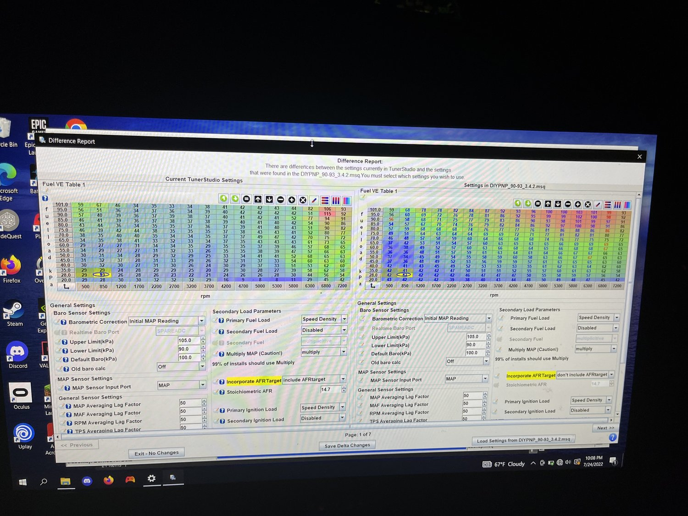
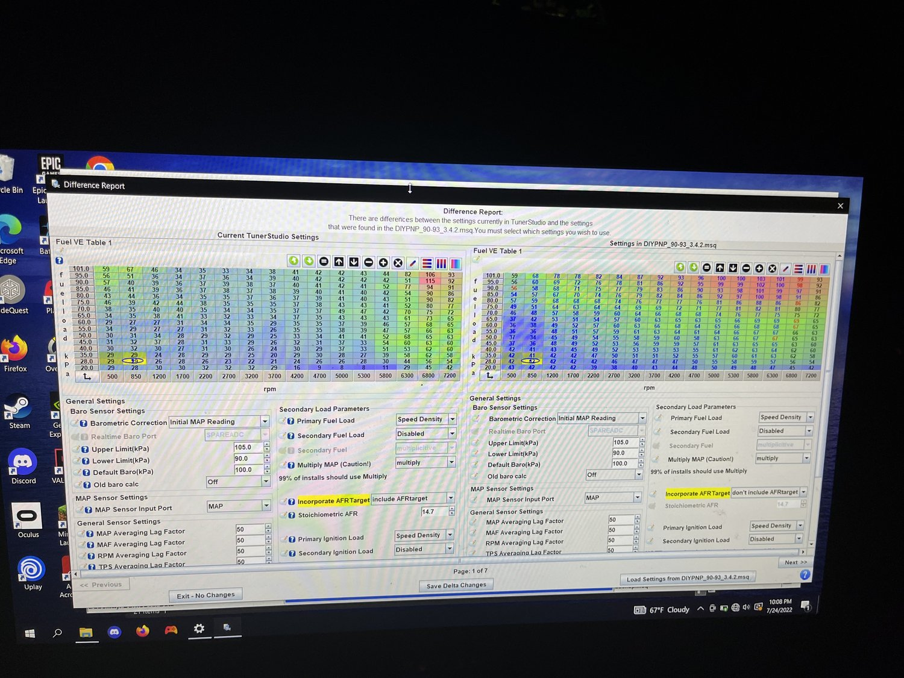

In October of 2020, I bought a barely running, 30-year-old Mazda Miata with a bad engine, multiple leaks, and dozens of other problems I would discover throughout the process of restoring it. Knowing almost nothing about cars, I dove in head-first. Over the span of the last few years, I have taken apart and reassembled almost every component of this car and developed a thorough understanding of what it takes to build a reliable, high-performing vehicle.
Basic Upgrades
Replaced water pump, timing belt, hoses, and spark plugs
Installed remote lock/unlock system
Replaced stock seats with racing bucket seats
Installed an aftermarket circuit-spec exhaust
Installed a roll cage
New wheels and tires
LED headlight bulbs
Engine Replacement
Original engine had an oil-burning issue due to a malfunctioning PCV valve, causing it to run low on oil and spin a rod bearing
New engine was a low-mileage engine imported from Japan
This engine was from an automatic car, so there were some slight difference compared to the original
Lower compression ratio 9.0:1 instead of 9.4:1
Different exhaust and intake camshafts, resulting in slightly less horsepower but more low-end torque
The throttle body on the automatic engine uses a variable throttle position sensor, an improvement over the original two-position throttle position sensor
Replacing the engine required pulling the engine and transmission together and transferring all the accessories from the original engine onto the new one
Reused original transmission, alternator, power steering pump, flywheel, clutch, belts, water pump, exhaust manifold, valve cover, and engine mounts
Performance Upgrades and Tuning
Coolant reroute
The car comes stock with a thermodynamically inefficient coolant system, where coolant both enters and exits the engine at the front, causing the rear cylinders to overheat
I relocated the thermostat to the rear of the engine and ran the upper radiator hose to it, so now coolant enters at the back and exits at the front, lowering coolant temps
Braking system upgrades
Replaced all rotors and brake pads
Replaced rear calipers, which were malfunctioning due to rusted slider pins
Upgraded to stainless steel braided brake lines, increasing braking power
Installed a brake master cylinder brace to reduce firewall flex and increase braking power
Transmission upgrades
New flyhweel, 6-puck ACT clutch, and heavy duty pressure plate
Replaced all transmission seals and gaskets
Installed short shifter and a weighted shift knob for faster gear changes
ECU and tuning
Soldered and assembled a custom ECU based around a V2.2 Microsquirt Module
Tuned the engine myself by adjusting ignition and fuel tables
Installed a wideband air-fuel ratio sensor, a manifold air pressure sensor, and a shift light
The new ECU allowed me to switch from a mass air flow system to a speed density system, which required the installation of an intake air temperature sensor and the fabrication of a custom intake to replace the stock airbox
Using the variable throttle position sensor from the automatic engine's throttle body, I set up TPSdot acceleration enrichment, which is much more responsive than MAPdot
Tuned idle using closed-loop PID
Replaced stock 205cc fuel injectors with 420cc fuel injectors from a Mazda RX8


 
